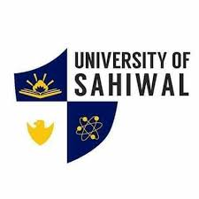
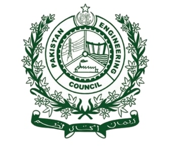

Career
Early career at the University of the Punjab:

Akhtar began his teaching career at the University of the Punjab as a
lecturer in chemical engineering in 1988. In 1995, he went to Bahrain
and became the senior lecturer and head of chemical engineering
discipline at the Bahrain Training Institute. He came back to serve his
country in 2001 and joined as an associate professor at the Institute of
Chemical Engineering & Technology, University of the Punjab. In 2004, he
became a professor at the University of the Punjab, Lahore and served in
this capacity until 2009. In 2002, Akhtar established Quality Management
Division under the Institute of Chemical Engineering & Technology. This
Division was upgraded to Institute of Quality & Technology Management in
2004 and Akhtar was appointed as the founding director of this
institute. The institute is presently offering BS, MS, & PhD degree in
field of Industrial Engineering & Quality Management. Akhtar has also
served as Founder Director of the Quality Enhancement Cell (QEC) and the
Director Student Affairs at the University of the Punjab.For the first
time in Pakistan, he launched MSc, MS and PhD programs in the field of
Total Quality Management.
Vice-chancellor at the University of the Punjab:

Akhtar served as the Vice-Chancellor of the University of the Punjab
from 2018-2022.Under his leadership the university witnessed the most
progressive years in its history.The most notable improvement was the
continuous advancement in the international ranking of the
university.Despite being one of the oldest and the largest university of
the country, the University of the Punjab appeared in the international
ranking for the first time in 2018 under the leadership of Akhtar.From
amongst the top 78% universities of the world in 2018, the university
improved by ~5% per year, reaching the top 57% universities of the world
in 2022.Akhtar made efforts to restructure the academic organization of
the university. The initial 13 faculties and 83 teaching departments
were modified to 19 Faculties and 146 departments, centers, institutes,
colleges and schools.Under the leadership of Akhtar, the university
launched new program/courses at the bachelors, masters and PhD level.
The courses like neuroscience, optics & photonics, social policy and
social entrepreneurship were offered for the first time in Pakistan.
Akhtar also significantly increased the research funding of the
university to reform the research output.Akhtar also took several other
steps for the development of the university, including implementation of
online teaching and research during the COVID-19 pandemic. University of
the Punjab was the first national university to make such a transition
to minimize the academic interruption for students.
Reactor at the National Textile University:

As the Rector of National Textile University, he created four new
faculties and ten new departments, growing the number of students by
three times, faculty strength by four times and revenue of the
university by five times.He launched new programs in Textile Engineering
including Ph.D. program in Textile Engineering, Textile Design, Fashion
Design and Polymer Engineering. He also established National Textile
Research Centre.Furthermore, he revived Plastic Technology Centre and
Synthetic Fibre Development Centre, Karachi as the Constituted Units of
the National Textile University. Due to his outstanding contribution, he
was awarded with the gold medal by BOG of the National Textile
University.
Vice-Chancellor at the University of Engineering and Technology
(UET), Taxila:

In 2014, he became the Vice Chancellor of the University of
Engineering & Technology, Taxila. In addition to increasing the number
of students and faculty, he started many new programs including 12 new
BS, MS and Ph.D. programs.He established new centers including
Technology Incubation Center, Staff Development Center, E-Rozgaar Center
and Social Entrepreneurship Center. He established Departments of
Computer Sciences, Electronics Engineering, Environmental Engineering,
Industrial Engineering and Basic Sciences in a state-of-art new Academic
Block.He was also instrumental in getting approved of the University
Statues in 2017.Owing to his significant contributions, he was decorated
with the National Award of Sitara-e-Imtiaz in 2015, in the Field of
Education (Engineering & Technology).Akhtar has helped start new
programs at Information Technology University.
Vice-chancellor at the University of Sahiwal:

In 2021, Akhtar was assigned the additional charge of the University of
Sahiwal (UoS) for a period of three months or until a regular
appointment was made.He established new faculties at the university and
modified various existing ones. He also established the online admission
portal for the first time in the history of the university.He took steps
to promote research culture at the university, developed national and
international linkages,[35] and improved the transport facilities at the
university.Vice-chancellor at Quaid-i-Azam University Akhtar was
appointed vice-chancellor of Quaid-i-Azam University for a period of
four years on 10 March 2023.He assumed his role on 14 March 2023.
Vice-chairman of the Pakistan Engineering Council (PEC):

Akhtar served as Vice-Chairman (Punjab) of the Pakistan Engineering
Council (PEC) for over 6 years.Through his work for the accreditation of
engineering programs, Pakistan became a signatory of the Washington
Accord, earning international recognition for Pakistani engineers.